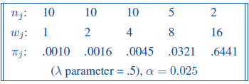
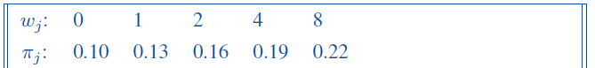

Sample size for K ordered binomial populations - Cochran-Armitage trend test
Cochran-Armitage trend test
See the StatXact page for the details of the calculations in StatXact and some background theory of the Cochran-Armitage trend test. We will attempt to replicate the results in R for the same examples. Power and sample size calculations for Cochran-Armitage trend test in R are available only in the multiCA package
Example 1 - Power for dose finding pilot study
Let’s consider an example of a dose-finding phase I clinical trial of patients with advanced chronic disease. At the lowest dose level the response probability is known to be 0.001. The drug will be considered useful if the log odds of response increase by 0.5 per unit increase in dose (that defines the lambda). The study design assumes doubling the dose up to maximum of 16 units. Sample sizes of 10, 10, 10, 5 and 2, are proposed for the five dose levels, to restrict the total number of subjects at the two highest dose levels due to possible side effects. A one-sided Cochran-Armitage trend test at the 2.5% significance level will performed at the end of the study. What is the power?
Design parameter are as below:
Initially, we need to compute probabilities by defining the logit trend model (unless they are defined by linear trend, which is not the case here):
# logit function of trend to compute probabilities
logit_trend <- function(p0, slope, xvec) {
logit0 <- log(p0 / (1 - p0))
logit_seq <- logit0 + (xvec - xvec[1]) * slope
pvec <- 1 / (1 + exp(-logit_seq))
pvec
}
# vector of probabilities (from the logit model):
p0 <- logit_trend(0.001, slope = 0.5, x = c(1, 2, 4, 8, 16))
# or simply (based on the study design table):
p0 <- c(0.001, 0.016, 0.0045, 0.0321, 0.6441)Now, function power.CA.test can be used:
multiCA::power.CA.test(
N = 37,
pvec = p0,
n.prop = c(10, 10, 10, 5, 2),
scores = c(1, 2, 4, 8, 16),
alternative = "greater",
sig.level = 0.025
)
Cochran-Armitage trend test
n = 37
n.prop = 0.27027027, 0.27027027, 0.27027027, 0.13513514, 0.05405405
p = 0.0010, 0.0160, 0.0045, 0.0321, 0.6441
alternative = greater
sig.level = 0.025
power = 0.7955764Asymptotic power is equal to 82%.
Note: We can obtain the same results using alternative = “two.sided” and sig.level=0.05.
Function power.multiCA.test is designed to calculate power of detecting trend in a categorical (multinomial) outcome. It does work as well in the special case of a binary outcome. However, the computation uses an approximation that is difficult to avoid for the multinomial setting but is not strictly necessary with the binary setting – as a result power may slightly biased away from 50%. Additionally, only two-sided power is implemented there, but we can still use it knowing that 5% is the two-sided significance level corresponding to the one-sided test with 2.5% significance level.
multiCA::power.multiCA.test(
N = 37,
pmatrix = rbind(p0, 1 - p0),
scores = c(1, 2, 4, 8, 16),
n.prop = c(10, 10, 10, 5, 2),
sig.level = 0.05
)
Multinomial Cochran-Armitage trend test
n = 37
n.prop = 0.27027027, 0.27027027, 0.27027027, 0.13513514, 0.05405405
p.ave = 0.04496486, 0.95503514
slopes = 0.03223203, -0.03223203
G = 5
sig.level = 0.05
power = 0.9341785Asymptotic power is equal to 96%. Result is much higher than the one from power.CA.test function, which is designed for binary outcomes.
Example 2 - Power for cohort study of effects of low dose radiation
Let’s consider an example of a long-term follow-up study of subjects exposed to low-dose radiation in Japan (adapted from Landis, Heyman and Koch, 1978). The cohort was partitioned into four groups based on average radiation exposures of 0, 5, 30 and 75 rads. There were 2500, 3600, 1450 and 410 subjects, respectively, in the four dose groups. Subjects were classified as responders if they died from leukemia and non-responders if they died from other causes. We want detect a trend parameter of 0.049 on the logit scale, given a background response rate of 1 in 10,000. A one-sided Cochran-Armitage trend test at the 5% significance level was performed at the end of the study. What was the power?
Design parameter are as below:

R code:
# only using the power.CA.test and previously defined logit model:
p1 <- logit_trend(0.0001, slope = 0.049, x = c(0, 5, 30, 75))
multiCA::power.CA.test(
N = 7960,
pvec = p1,
n.prop = c(2500, 3600, 1450, 410),
scores = c(0, 5, 30, 75),
alternative = "greater",
sig.level = 0.025
)
Cochran-Armitage trend test
n = 7960
n.prop = 0.31407035, 0.45226131, 0.18216080, 0.05150754
p = 0.0001000000, 0.0001277586, 0.0004347779, 0.0039297563
alternative = greater
sig.level = 0.025
power = 0.7152462Asymptotic power is equal to 72%.
Example 3 - Sample size calculation for trend test
Let’s consider an example of the study where the design parameters are as below:

What is the required sample size to achieve the power of 80% with the significance level 5%?
R code:
multiCA::power.CA.test(
power = 0.8,
pvec = c(0.10, 0.13, 0.16, 0.19, 0.22),
scores = c(0, 1, 2, 4, 8),
alternative = "greater",
sig.level = 0.05
)
Cochran-Armitage trend test
n = 526.2628
n.prop = 0.2, 0.2, 0.2, 0.2, 0.2
p = 0.10, 0.13, 0.16, 0.19, 0.22
alternative = greater
sig.level = 0.05
power = 0.8Sample size N=527 subjects is required to achieve asymptotic power of 80%. That is the total sample size, including all the treatment arms/groups.
Additional notes
- There are 2 methods to compute the asymptotic power:
o Lachin, John M. 2011. “Power and Sample Size Evaluation for the Cochran-Mantel-Haenszel Mean Score (Wilcoxon Rank Sum) Test and the Cochran-Armitage Test for Trend.” Stat Med 30 (25): 3057–66. https://doi.org/10.1002/sim.4330.
o Nam, Jun-mo. 1987. “A Simple Approximation for Calculating Sample Sizes Detecting Linear Trend in Proportions.” Biometrics, 701–5. In R, power.multiCA.test uses the first one and power.CA.test the second.
StatXact is calculating the (exact or asymptotic) power of the exact CA test, and not the exact power of the asymptotic test. That is not implemented in multiCA package in R.
Kudos to Aniko, author of the package, for extra detailed explanations and her continuous work on that unique and extremely useful package!